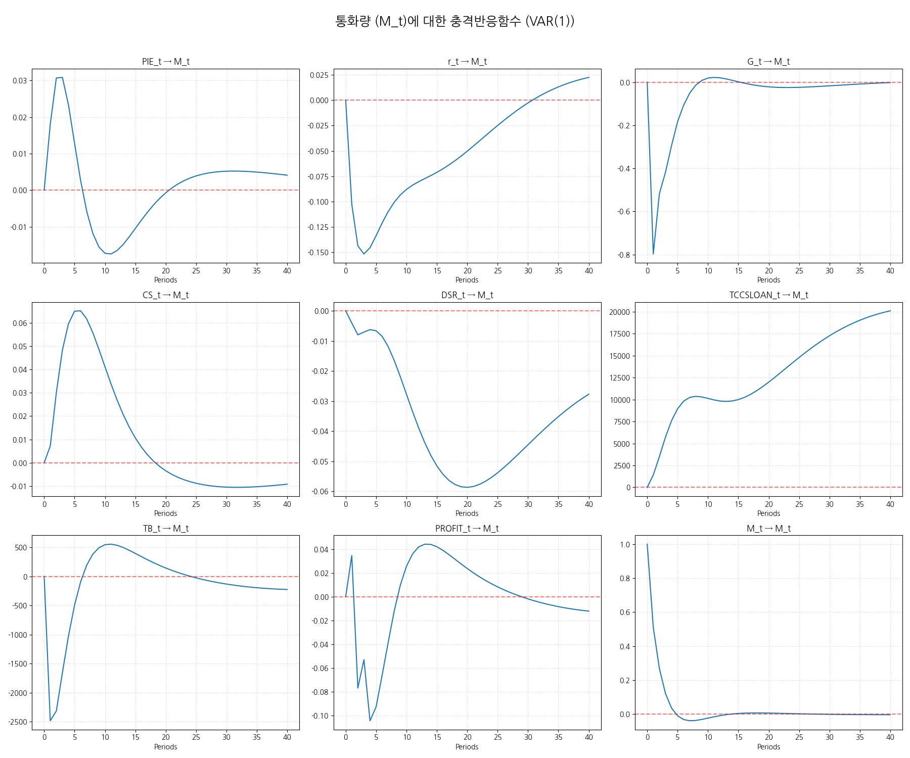

2025-11-16 분석 결과 (Lag 1 적용)
FRED 최신 데이터를 반영한 VAR 모형의 분석 및 다음 분기 예측 결과입니다.
🎯 예측 보고서
## 🎯 다음 분기 통화량($M_t$) 예측 보고서 (VAR 모형 기반)📈 통화량 예측 결과
| Metric | Value | 95% CI (Lower) | 95% CI (Upper) |
|---|---|---|---|
| 예측 변동률 | **0.62%** | 0.62% | 3.23% |
**해석:** 모형은 통화량이 다음 분기에 **0.62%** 변동할 것으로 예상하며, 95% 확률로 변동 폭은 0.62%에서 3.23% 사이에 위치합니다.
📊 분산 분해 (FEVD) 요약 (1분기 후)
⚠️ 경고: FEVD 데이터 구조가 비정상적입니다. 신뢰도가 낮습니다.(주요 변수가 $M_t$의 예측 오차 분산에 기여하는 정도)
| Rank | Variable | Contribution to $M_t$ Variance (1Q) |
|---|---|---|
| 1 | **Y_t** | 100.00% |
| 2 | **pi_t** | 0.00% |
| 3 | **PIE_t** | 0.00% |
🛡️ 모형 신뢰도 지표 및 예측 성능 분석
- **적용된 차수:** 1차 (BIC 기준 자동 선택)
- **$M_t$ 방정식 설명력 ($\mathbf{R^2}$):** 0.3261
- **통화량 오차의 크기 ($\mathbf{RMSE}$):** **1.2368 %p** (분기 대비)
| 지표 | 역할 | 이 모형의 수치 해석 |
|---|---|---|
| $\mathbf{R^2}$ | **과거 설명력** | 32.61%의 통화량 변동을 모형이 설명합니다. BIC 적용으로 과적합을 피하고 **균형 잡힌 설명력(32.61%)**을 확보했습니다. |
| **RMSE** | **예측 오차 크기** | $M_t$ 예측 시 **평균적인 오차 크기**는 약 **1.2368 %p**입니다. 이 수치가 낮을수록 예측 정확도가 높습니다. |
📝 예측 개요
- **분석 대상 변수:** 통화량 변화율($M_t$)은 FRED 기준 **M2 Money Stock (M2SL)**의 로그 차분($\mathbf{log\_diff}$) 값입니다. 이는 **통화량의 분기 대비 백분율 변화**를 나타냅니다.
- **예측 시점:** 2025년 06월 데이터 기준
- **최근 관측된 $M_t$ 변화율:** **1.30%** (분기 대비)
- **예측 기간:** 다음 분기 (1분기 후)
- **예측 대상:** 통화량 변화율($M_t$, 분기 대비 % 변동)
📈 충격반응함수 (IRF)
통화량($M_t$)에 대한 각 경제 변수 충격의 동태적 반응입니다.

📑 모형 요약 및 통계
Summary of Regression Results
==================================
Model: VAR
Method: OLS
Date: Sun, 16, Nov, 2025
Time: 21:55:04
--------------------------------------------------------------------
No. of Equations: 11.0000 BIC: 36.4708
Nobs: 89.0000 HQIC: 34.2675
Log likelihood: -2715.84 FPE: 1.75374e+14
AIC: 32.7798 Det(Omega_mle): 4.36236e+13
--------------------------------------------------------------------
Results for equation Y_t
================================================================================
coefficient std. error t-stat prob
--------------------------------------------------------------------------------
const 4.541085 3.306805 1.373 0.170
L1.Y_t 0.052135 0.167751 0.311 0.756
L1.pi_t -0.338977 0.360864 -0.939 0.348
L1.PIE_t 0.253511 0.650594 0.390 0.697
L1.r_t 0.023347 0.135838 0.172 0.864
L1.CS_t -0.109919 0.356293 -0.309 0.758
L1.G_t 0.053885 0.024321 2.216 0.027
L1.DSR_t -0.290397 0.160838 -1.806 0.071
L1.TCCSLOAN_t -0.000000 0.000000 -1.555 0.120
L1.TB_t -0.000015 0.000016 -0.954 0.340
L1.PROFIT_t 0.017835 0.017637 1.011 0.312
L1.M_t 0.176626 0.123146 1.434 0.151
================================================================================
Results for equation pi_t
================================================================================
coefficient std. error t-stat prob
--------------------------------------------------------------------------------
const -2.670146 1.593364 -1.676 0.094
L1.Y_t 0.134341 0.080830 1.662 0.097
L1.pi_t 0.021493 0.173880 0.124 0.902
L1.PIE_t 0.682127 0.313485 2.176 0.030
L1.r_t -0.056673 0.065453 -0.866 0.387
L1.CS_t 0.114342 0.171677 0.666 0.505
L1.G_t 0.019471 0.011719 1.661 0.097
L1.DSR_t 0.059102 0.077499 0.763 0.446
L1.TCCSLOAN_t 0.000000 0.000000 1.329 0.184
L1.TB_t -0.000002 0.000008 -0.276 0.782
L1.PROFIT_t 0.000455 0.008498 0.054 0.957
L1.M_t 0.107263 0.059337 1.808 0.071
================================================================================
Results for equation PIE_t
================================================================================
coefficient std. error t-stat prob
--------------------------------------------------------------------------------
const 1.098075 0.984109 1.116 0.265
L1.Y_t 0.031649 0.049923 0.634 0.526
L1.pi_t -0.178712 0.107393 -1.664 0.096
L1.PIE_t 0.821190 0.193617 4.241 0.000
L1.r_t 0.008734 0.040425 0.216 0.829
L1.CS_t -0.012565 0.106033 -0.119 0.906
L1.G_t 0.001151 0.007238 0.159 0.874
L1.DSR_t -0.054194 0.047866 -1.132 0.258
L1.TCCSLOAN_t -0.000000 0.000000 -0.916 0.360
L1.TB_t -0.000005 0.000005 -1.095 0.274
L1.PROFIT_t 0.004003 0.005249 0.763 0.446
L1.M_t 0.030384 0.036648 0.829 0.407
================================================================================
Results for equation r_t
================================================================================
coefficient std. error t-stat prob
--------------------------------------------------------------------------------
const 0.218961 1.056185 0.207 0.836
L1.Y_t -0.019577 0.053579 -0.365 0.715
L1.pi_t -0.226095 0.115259 -1.962 0.050
L1.PIE_t 0.457574 0.207798 2.202 0.028
L1.r_t 0.924263 0.043386 21.303 0.000
L1.CS_t 0.046993 0.113799 0.413 0.680
L1.G_t 0.007418 0.007768 0.955 0.340
L1.DSR_t -0.069712 0.051371 -1.357 0.175
L1.TCCSLOAN_t -0.000000 0.000000 -0.445 0.656
L1.TB_t -0.000005 0.000005 -0.870 0.384
L1.PROFIT_t 0.007085 0.005633 1.258 0.209
L1.M_t -0.097561 0.039332 -2.480 0.013
================================================================================
Results for equation CS_t
================================================================================
coefficient std. error t-stat prob
--------------------------------------------------------------------------------
const -0.672068 1.001452 -0.671 0.502
L1.Y_t -0.032584 0.050803 -0.641 0.521
L1.pi_t 0.121288 0.109286 1.110 0.267
L1.PIE_t -0.112409 0.197030 -0.571 0.568
L1.r_t -0.059933 0.041138 -1.457 0.145
L1.CS_t 0.762314 0.107902 7.065 0.000
L1.G_t -0.007065 0.007366 -0.959 0.337
L1.DSR_t 0.091936 0.048709 1.887 0.059
L1.TCCSLOAN_t 0.000000 0.000000 0.560 0.575
L1.TB_t -0.000004 0.000005 -0.782 0.434
L1.PROFIT_t -0.008508 0.005341 -1.593 0.111
L1.M_t -0.003211 0.037294 -0.086 0.931
================================================================================
Results for equation G_t
================================================================================
coefficient std. error t-stat prob
--------------------------------------------------------------------------------
const 31.434543 21.388496 1.470 0.142
L1.Y_t -3.739017 1.085021 -3.446 0.001
L1.pi_t 0.976745 2.334074 0.418 0.676
L1.PIE_t -5.402310 4.208056 -1.284 0.199
L1.r_t 0.387690 0.878601 0.441 0.659
L1.CS_t -3.032130 2.304509 -1.316 0.188
L1.G_t -0.535967 0.157310 -3.407 0.001
L1.DSR_t -0.296587 1.040306 -0.285 0.776
L1.TCCSLOAN_t -0.000001 0.000002 -0.354 0.723
L1.TB_t 0.000045 0.000105 0.432 0.666
L1.PROFIT_t 0.004402 0.114078 0.039 0.969
L1.M_t -1.496008 0.796509 -1.878 0.060
================================================================================
Results for equation DSR_t
================================================================================
coefficient std. error t-stat prob
--------------------------------------------------------------------------------
const 0.595620 1.055470 0.564 0.573
L1.Y_t 0.146149 0.053543 2.730 0.006
L1.pi_t 0.026267 0.115181 0.228 0.820
L1.PIE_t 0.236869 0.207657 1.141 0.254
L1.r_t 0.070083 0.043357 1.616 0.106
L1.CS_t 0.165040 0.113722 1.451 0.147
L1.G_t 0.023337 0.007763 3.006 0.003
L1.DSR_t 0.898459 0.051337 17.501 0.000
L1.TCCSLOAN_t -0.000000 0.000000 -1.757 0.079
L1.TB_t -0.000002 0.000005 -0.426 0.670
L1.PROFIT_t -0.006635 0.005629 -1.179 0.239
L1.M_t 0.020787 0.039306 0.529 0.597
================================================================================
Results for equation TCCSLOAN_t
================================================================================
coefficient std. error t-stat prob
--------------------------------------------------------------------------------
const 61216.450565 81632.843623 0.750 0.453
L1.Y_t 5634.615218 4141.166008 1.361 0.174
L1.pi_t 4454.643288 8908.391681 0.500 0.617
L1.PIE_t 24666.535351 16060.764199 1.536 0.125
L1.r_t -4923.964927 3353.331325 -1.468 0.142
L1.CS_t -2187.632004 8795.551579 -0.249 0.804
L1.G_t 509.208235 600.401956 0.848 0.396
L1.DSR_t -5178.379454 3970.506969 -1.304 0.192
L1.TCCSLOAN_t 0.997202 0.007714 129.269 0.000
L1.TB_t -0.081329 0.400002 -0.203 0.839
L1.PROFIT_t -777.201719 435.399065 -1.785 0.074
L1.M_t 2239.634977 3040.011108 0.737 0.461
================================================================================
Results for equation TB_t
================================================================================
coefficient std. error t-stat prob
--------------------------------------------------------------------------------
const 15833.944573 23070.924603 0.686 0.493
L1.Y_t -619.903316 1170.368745 -0.530 0.596
L1.pi_t -448.202939 2517.673325 -0.178 0.859
L1.PIE_t -9037.553109 4539.063733 -1.991 0.046
L1.r_t -1688.841703 947.712351 -1.782 0.075
L1.CS_t 31.537880 2485.782662 0.013 0.990
L1.G_t 62.953780 169.684500 0.371 0.711
L1.DSR_t -668.811413 1122.137400 -0.596 0.551
L1.TCCSLOAN_t -0.004718 0.002180 -2.164 0.030
L1.TB_t 0.376851 0.113048 3.334 0.001
L1.PROFIT_t -56.020561 123.051686 -0.455 0.649
L1.M_t -2574.342593 859.162366 -2.996 0.003
================================================================================
Results for equation PROFIT_t
================================================================================
coefficient std. error t-stat prob
--------------------------------------------------------------------------------
const 20.522832 23.027028 0.891 0.373
L1.Y_t 0.758683 1.168142 0.649 0.516
L1.pi_t -4.320610 2.512883 -1.719 0.086
L1.PIE_t 0.295445 4.530427 0.065 0.948
L1.r_t 0.144434 0.945909 0.153 0.879
L1.CS_t 2.027402 2.481053 0.817 0.414
L1.G_t 0.331669 0.169362 1.958 0.050
L1.DSR_t -1.595773 1.120002 -1.425 0.154
L1.TCCSLOAN_t -0.000003 0.000002 -1.240 0.215
L1.TB_t -0.000114 0.000113 -1.007 0.314
L1.PROFIT_t -0.152302 0.122818 -1.240 0.215
L1.M_t 0.332313 0.857528 0.388 0.698
================================================================================
Results for equation M_t
================================================================================
coefficient std. error t-stat prob
--------------------------------------------------------------------------------
const 5.434141 3.757803 1.446 0.148
L1.Y_t -0.158192 0.190630 -0.830 0.407
L1.pi_t 0.526283 0.410080 1.283 0.199
L1.PIE_t -1.395381 0.739325 -1.887 0.059
L1.r_t -0.035895 0.154364 -0.233 0.816
L1.CS_t -0.674328 0.404885 -1.665 0.096
L1.G_t -0.035652 0.027638 -1.290 0.197
L1.DSR_t 0.014031 0.182774 0.077 0.939
L1.TCCSLOAN_t -0.000000 0.000000 -0.464 0.643
L1.TB_t 0.000000 0.000018 0.019 0.985
L1.PROFIT_t -0.017528 0.020043 -0.875 0.382
L1.M_t 0.461394 0.139941 3.297 0.001
================================================================================
Correlation matrix of residuals
Y_t pi_t PIE_t r_t CS_t G_t DSR_t TCCSLOAN_t TB_t PROFIT_t M_t
Y_t 1.000000 0.317163 0.307558 0.405050 -0.412631 -0.678265 0.323920 0.339695 0.116114 0.336901 -0.818184
pi_t 0.317163 1.000000 0.812808 0.254912 -0.635701 -0.135668 0.009620 0.280558 -0.261260 0.566419 -0.299868
PIE_t 0.307558 0.812808 1.000000 0.336093 -0.792814 0.002581 -0.046515 0.166282 -0.290461 0.733565 -0.276628
r_t 0.405050 0.254912 0.336093 1.000000 -0.505596 -0.240567 0.202077 0.261148 0.071824 0.456744 -0.492518
CS_t -0.412631 -0.635701 -0.792814 -0.505596 1.000000 0.065813 -0.037141 -0.188929 0.107465 -0.697655 0.343710
G_t -0.678265 -0.135668 0.002581 -0.240567 0.065813 1.000000 -0.546967 -0.329679 -0.088895 0.006095 0.711957
DSR_t 0.323920 0.009620 -0.046515 0.202077 -0.037141 -0.546967 1.000000 0.130596 0.078294 0.079924 -0.435137
TCCSLOAN_t 0.339695 0.280558 0.166282 0.261148 -0.188929 -0.329679 0.130596 1.000000 0.353430 0.017550 -0.372494
TB_t 0.116114 -0.261260 -0.290461 0.071824 0.107465 -0.088895 0.078294 0.353430 1.000000 -0.070229 -0.048527
PROFIT_t 0.336901 0.566419 0.733565 0.456744 -0.697655 0.006095 0.079924 0.017550 -0.070229 1.000000 -0.272280
M_t -0.818184 -0.299868 -0.276628 -0.492518 0.343710 0.711957 -0.435137 -0.372494 -0.048527 -0.272280 1.000000